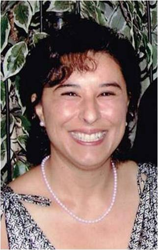

Jacqueline Valdez, M.Ed., CO, BOCP, FAAOP
Clinical Education Specialist & Web Designer
Advancing global standards in Orthotics & Prosthetics through education, innovation, and design.

Welcome to My Portfolio
I am a Certified Orthotist/Prosthetist and Clinical Education Specialist with over 35 years of experience in advancing global standards in orthopedic, prosthetic, and orthotic care. My work focuses on practitioner training, curriculum development, international education, and innovative digital learning solutions.
This portfolio showcases my work in web design, visual communication, and digital media — blending clinical expertise with modern design principles.
Connect with me on LinkedIn.
Experience
- Clinical and Technical Manager – BionIT Labs (2025–Present)
- Clinical Education Specialist – Ottobock (2022–2024)
- Clinical Education Specialist – Fillauer Companies (2017–2022)
- Clinical Specialist – Endolite US (2016–2017)
- Director of O&P Education – Trulife (2012–2016)
Education
- M.Ed. – American College of Education (Integrated Sciences & Online Teaching)
- B.S. – University of New Mexico (Sports Medicine)
- Associate Degree – Century College Orthotics and Prosthetics
Certifications
- Certified Orthotist (CO)
- Board Certified Prosthetist (BOCP)
- Fellow of the Academy of Orthotics and Prosthetics (FAAOP)
- Certified Medical Billing and Coding
- Web Design (In Progress)